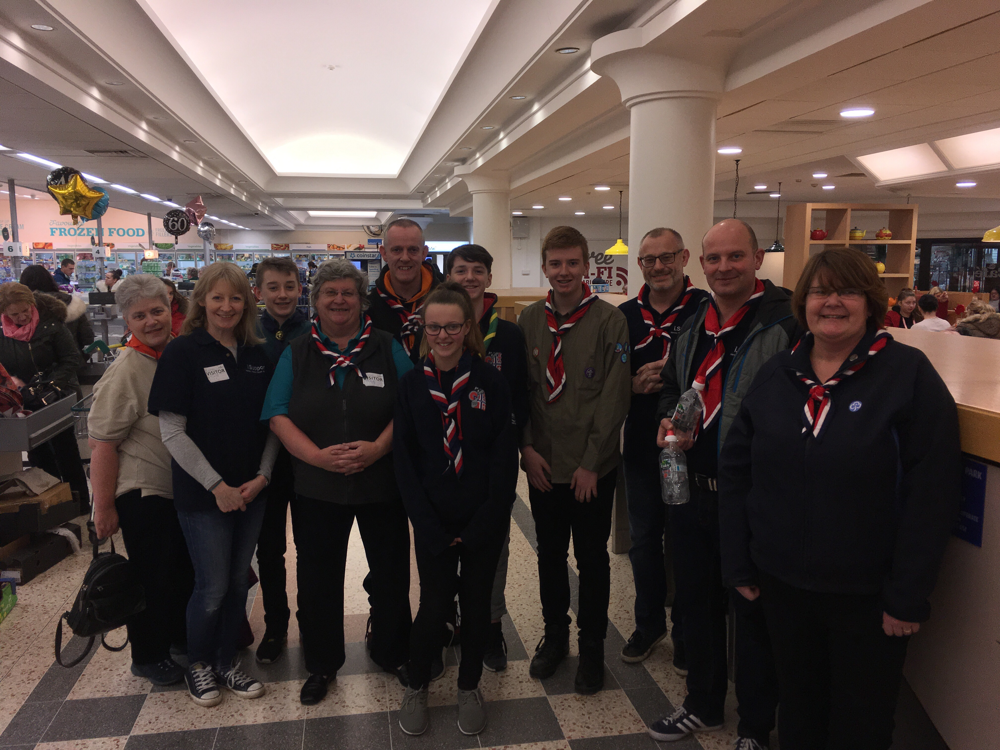
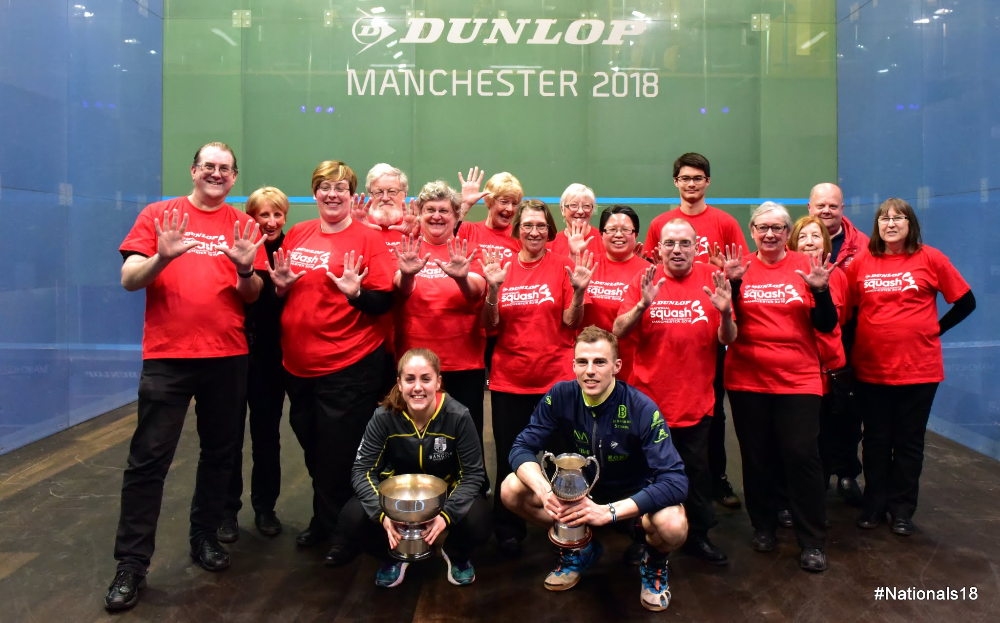

|
|
Events of 2018 Part 1
January 2018
Bag Pack I got roped in to help out on a Saturday, with a bag pack for the World Scout Jamboree WSJ) 2019 at Morrisons in Widnes. Another group were at the Tesco's across the way from us. I had to wear the International Scout necker, as the store insisted we should be identifiable as a group. Vikki Gale had to tie my necker. She had it nailed, having apparently learnt it by watching a YouTube video on-line.
{kind=link}
As a people watcher, this was a fascinating exprience. Some people are very anal about packing their own shopping, and looked horrified at the thought of help. They couldn't put money in the buckets quick enough to get us away from their highly organised bag filling operation. Others were so pleased to have a bit of a rest from the usual routine. Checking out what people were buying sent me off into quite a thought process, imagining what they would do with their purchases when they got home. Top of my list was the woman who bought an extra large bag of baking potatoes, a box of Chardonnay wine, two large cucumbers and the latest Cliff Richard DVD!
It's amazing how many people give because they used to be Scouts and have very fond memories of their scouting days. Our money counting was done up in the staff canteen. It's amazing how dirty your hands get when dealing with so many coins. Overall we raised £1,108.79
Helsby 4 Village Half Marathan
The following weekend, I was helping out again, this time as a marshall at the Helsby Running Club 4 Villages half marathon. Much more my style of volunteering. Kevin Holland and I were stationed at the junction of Norton's Lane and Smithy Lane, just down the hill from the closed Motor Museum near Mouldsworth. There was also a water station manned by Scouts from Chester District there.
The weather was appalling, alternating between sleet and snow, and the tempertures were Arctic. The road surface was treacherous - we had to keep shouting to the runners to take care as they took the left turn. We were at the half way mark of the run. Lots of very, very cold runners ran past. One of them gave up and asked for assistance back to the finish line. We put him to sit in my car with the heating on until the paramedics arrived. I kept checking on him to make sure hypothermia wasn't setting in.
Thank God I had on my waterproof gloves, socks and shoes, two t-shirts, two fleeces, my waterproof top and the woolly hat provided by the organisers. It was well worth it. The organisers sent us a cheque for £500.
February 2018
The Chink, StyalElizabeth (Graney), Tony (Quaife) and I, arranged to have a meal at The Clink restaurant at Styal Prison. It is situated on the prison grounds in a converted chapel. The restaurant allows prisoners to learn, engage with the public and take their first steps towards a new life. The kitchen and serving staff are all prisoners, under the supervision of prison staff, working towards hospitality qualifications. All the leather upholstery and boardroom tables in the restaurant are made by prisoners at HMP Frankland and the poetry on the walls is from former Clink trainees.
You can't just show up. You have to make a reservation and give the names of all those attending. I think they must do some sort of security check on you all before accepting the booking. It was a fabulous experience. Some of the staff were obviously new, and very nervous, but the food was gorgeous. We didn't have a starter, but went straight to mains. I had a lovely well cooked steak and chips with pepper sauce, whilst the other two had venison. For sweet, there was lemon sorbet, tarte tatin, and cheesecake. This was all washed down with various flavour of lemonade, as obviously, no alcohol is allowed on prison grounds. Elizabeth and I wrote up the visit for a People and Places track at the Talking Newspaper.
 National Squash Championships 12th-18th
{kind=link}
It had been announced fairly late on, that The National Squash Championships for 2018 would be sponsored by Dunlop. Having spent so much time, and money, on staging the World Championships in Manchester in December 2017, there had been a danger that the Nationals would not be held in 2018. Dunlop stepped in, probably because nine-time British National champion Nick Matthew, had been a Dunlop brand ambassador throughout his career, and this was likely to be his last appearance at the event.
We, the usual volunteers, were there at the National Squash Centre, which is opposite Manchester City's Ethiad stadium, and a Commonwealth Games 2002 legacy site, for the duration of the Championships. Nick Matthew beat James Willstrop in the final to win his tenth title, whilst Tesni Evans beat Laura Massaro in the semi-finals, and became the first Welsh winner when she beat Alison Waters in straight sets in the final.
April 2018
Commonwealth Games ReunionMCRVIP organised a Commonwealth Games Crew 2002 reunion, at the Manchester Regional Arena. A load of us turned up, some in their uniforms. A load of photos were perused and memories relived. Some people were interviewed for social media publication, and of couse, Peter Maguire was front and centre. I declined the offer.
June 2018
Tennis at The Northern Club, DidsburyThe ITF Women's Circit Grass Court Tennis tournament at the Northern Club, in Didsbury was back. This time it was known as the Fuzion 100 Manchester Trophy, and was held from 11-17 June 2018. The usual gang of volunteers were back, and this year our uniform was bloody bright. The hoodies were a lovely shade of dark green, but the polo-shirts were bright fluorescent yellow/green. We definitely stood out. They were of a cheaper quality than before, and a sure talking point whenever worn away from the tennis.
There were a number of overseas students from the University of Manchester amongst the volunters. I spent a lovely afternoon with a lass from China, Xi Luo, who was doing a teaching Masters. We had little actual work to do, so chatted about all sorts, as she wanted to improve her colloquial English. She asked me how I started volunteering at sporting events, and I told her it was for the Commonwealth Games in Mancheter in 2002. I then had to explain what the Commonwealth was.
 The winner of the tournament was the Moroccan Ons Jabeur, who went into the
tournament ranked 180 in the world. One of the prizes was a wild card into the main Wimbledon Singles draw, where she won her first round
match to give her one of the best paychecks of her career.
The winner of the tournament was the Moroccan Ons Jabeur, who went into the
tournament ranked 180 in the world. One of the prizes was a wild card into the main Wimbledon Singles draw, where she won her first round
match to give her one of the best paychecks of her career.Cricket One Day International
Old Trafford hosted the fifth and final One Day International between England and Australia, and the usual Lancashire Cricket gang were in attendance. Australia batted first, and were all out for 205 in the 35th over. England won with 9 balls remaining, scoring 208 for 9, with Joss Buttler 110 not out. That meant England won the ODI seried in a 5-0 whitewash.
Gawsworth Hall Ourdoor Theatre
The OddSocks Theatre Company were back at Gawsworth Hall. On a glorious, warm summer evening, the picnic crowd were out in force, and the people watching was fantastic. The play this year was The Tempest. It was a Star Trek/Star Warsthemed Forbidden Planet version. The official blurb said "Space explorer Prospero is marooned in a galaxy far, far away with his fearless daughter Miranda and a host of madcap aliens. Years later when his enemies' ship is passing nearby, the chance for revenge on these Space Cowboys is hard to resist and he conjures up the force to bring them to him. This Rocket Man will have his day!
Crash landing in a meteor storm is just the beginning for the crew as they are teased and tormented to submission. Prospero’s enemies do their malevolent best to get away but he's one tough Space Oddity to beat. Prepare for launch, get on your space suits and take one small step for man, one giant leap for Shakespeare! As always, a brilliant evening.